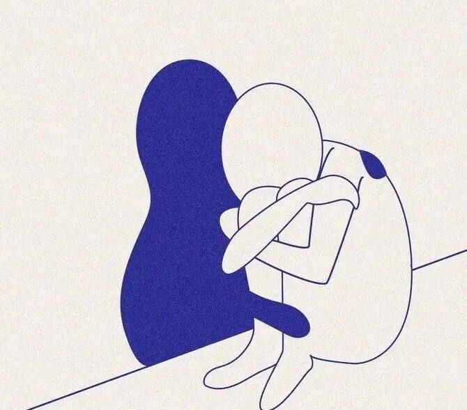

Seu Perfil Emocional Predominante
"Você ama com medo de perder"
Se você chegou até aqui, é bem provável que já tenha se perguntado, mais de uma vez, por que ama de um jeito tão intenso. E por que esse mesmo amor vem sempre acompanhado de um medo que não dá trégua. Eu vejo esse padrão com frequência no consultório, e a primeira coisa que preciso te dizer é: isso não é "carência", não é fraqueza de caráter, e não é frescura. É um padrão de apego, um jeito que o seu sistema nervoso aprendeu, ainda muito cedo, a lidar com vínculo.
Na maioria dos casos, esse padrão se forma na infância, quando o cuidado que você recebeu era inconsistente. Às vezes presente e atento, às vezes ausente ou imprevisível, não por maldade de ninguém, mas porque quem cuidou de você também estava lidando com as próprias limitações. Pra uma criança pequena, isso ensina uma lição que fica gravada: "o amor pode sumir, então eu preciso ficar alerta". Esse alerta virou hábito. E hoje, adulto, ele continua ligado.
Na prática, isso costuma aparecer assim: você sente o clima da relação mudar antes de qualquer coisa ser dita. Uma mensagem demorada vira, na sua cabeça, sinal de afastamento. Você busca reasseguramento, precisa ouvir de novo que está tudo bem, que a pessoa ainda gosta de você, mas o alívio dura pouco, e a dúvida volta. Às vezes você se entrega tanto à relação que, sem perceber, vai deixando de lado o que você mesmo precisa, sente ou quer.
Aqui vai um mal-entendido comum que eu preciso desfazer: apego ansioso não é um defeito de personalidade, e muito menos algo definitivo. Não existe "sou assim e pronto". Existe um padrão aprendido, e o que é aprendido pode ser revisto. Isso tem nome na literatura: chama-se "apego conquistado", quando alguém que cresceu com apego inseguro desenvolve, ao longo da vida adulta, uma forma mais segura de se relacionar. Isso acontece através de autoconhecimento, de relações que corrigem a experiência antiga e, quando necessário, de acompanhamento terapêutico.
O primeiro passo não é parar de sentir tanto. É entender de onde vem esse alarme, pra deixar de reagir a ele no automático, e passar a escolher, com mais clareza, como você quer se relacionar.
"Se eu perder essa pessoa, talvez eu não fique bem."
Dra. Aline Zanette
Médica · Saúde Mental · CRM 36587
Ferramenta de autoconhecimento. Não é diagnóstico médico ou psicológico e não substitui avaliação individual realizada por profissional habilitado.